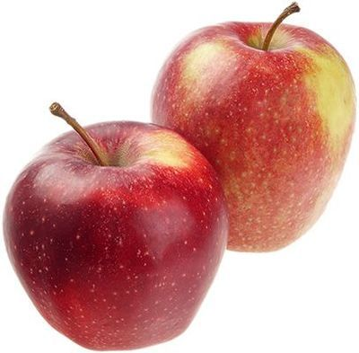

Яблоки Черный принц
Сладкий сорт родом из Голландии с крупными темно-красными плодами округлой конической формы. Яблоки чаще всего однородного насыщенного цвета, с плотной глянцевой кожей. Мякоть очень сладкая, с легкой кислинкой, ароматная и сочная. Урожай собирают на стыке сентября и ноября, при этом яблоки очень хорошо хранятся: остаются свежими даже в тепле до января, а при соблюдении особых требований лежат и до июня. В кулинарии используется для блюд, в которых важно сохранить плотную мякоть после тепловой обработки.
| Цвет плодов: | красный |
| Высота дерева: | 5 м |
| Вес плодов: | до 200 гр |
| Вкус (сладкий, кислый и тд): | сладкий |
| Время созревания : | сентябрь- декабрь |
| Срок созревания | зимний |
| Срок хранения | до февраля |